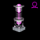
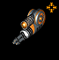
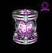
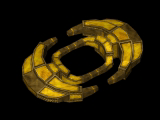

ExplorationPsst! Pilot! Over here! I'm Zhilaa Katdinal... You know, the Divisional Chief of the TRI Bureau of Stellar Cartography? Anyway, I've heard that you've got a lot of time on your hands and you're sick of these TRI sponsored missions. Well, I've got this idea... If you'll scout out a few sectors and return the data to me, I'll let you sell say, 20% of the information you find to other pilots... |
| Untamed Space - Profits in the Making |
|
With the addition of scout class vessels TRI pilots are now better equipped to engage in deep-space exploratory missions. Pilots who stray from the beaten path are likely to discover unexpected and profitable surprises. Over the past few weeks, several reports have been filed with the TRI Bureau of Exploration and Expansion regarding the discovery of precollapse wreckage and rich mineral deposits. |
| Exploratory Equipment |
|
Before venturing out into deep space it is a good idea to equip your ship for the job. Obviously, the biggest radar you can afford is vital. It is also a good idea to purchase a Rotacol. A few more important exploratory devices are the Insight and Displacer. Rotacol - This handy MODx provides readouts of your current position in space as XYZ coordinates. The Rotacol also has the ability to map user definable waypoints within sectors so that you may mark your discoveries for future reference. With a rotacol equipped, open your chat channel (F1-F5), and type "/rotacol X Y Z" where X Y and Z are the coordinates you would like to map. This will plot a rotacol waypoint in your sector. One rotacol waypoint can be set in each sector of the map. "/rotacoloff" will destroy a waypoint. Insight and Displacer - Individually these devices are next to worthless, but together they are quite useful. The Insight, developed by Hyperial, is a high-powered targeting beam which is used to locate specific components inside of precollapse wreckage. Since the Insight is such a localized beam, pilots will need to actively search by passing the beam across different surfaces of an object. The Displacer, available at Amananth, is a localized teleporter which can be used to retreive components you have locked onto with the Insight. |
| Wreckage - Picking up the Pieces |
|
Over the last few months, supply lines and trade routes have become solidly defined between the factions. Each faction has completed a number of building projects, and the standard of living in general is up. TRI's reconstruction efforts have finally progressed to a point that exploratory parties and scientific teams can now be deployed, and research regarding the collapse can be conducted on a greater scale. An important part of this process is data gathering. Archaeologically important wreckage and precollapse artifacts will teach us quite a bit about the changes which have taken place in our universe. To date, five types of wreckage have been catalogued. Wreckage is being classified based on the overall condition of the remains. Four classifications have been defined: Antique, Rusty, Superior, and Perfect. To retrieve an artifact from wreckage, a pilot will need to have both an Insight and a Displacer equipped. Once you are in range to connect with the Insight, simply move your targeting beam across the wreckage until an artifact is collected. CAUTION: Removing integral components from wreckage may compromise the structural integrity of the remains. |
| Pure Asteroids - The Mother Lode |
|
Another interesting find are large mineral deposits which are being called 'Pure Asteroids'. Scouting parties have reported asteroids of varying colors rich in base commodities. These asteroids contain a variety of deposits, ranging from Aluminum to Zinc. Once a pure asteroid has been mined out it will disintegrate into trace elements and debris. |